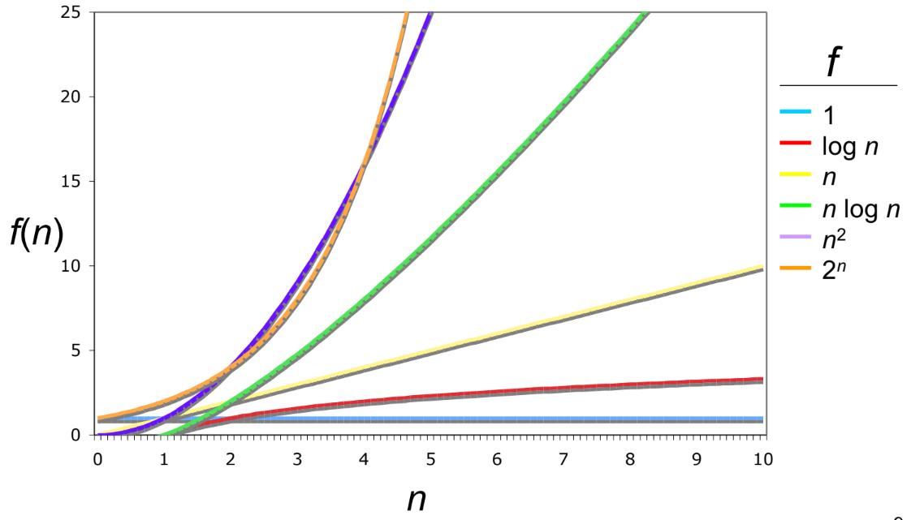

16 Complexity Analysis
16.1 References
16.2 Runtime Overview
16.3 Common Time Complexities
| Notation | Name |
|---|---|
| O(1) | Constant |
| O(log n) | Logarithmic |
| O(n) | Linear |
| O(n log n) | Loglinear, Linearithmic |
| O(n²) | Quadratic |
| O(n³), O(n⁴), … | Polynomial |
| O(cⁿ) | Exponential |
| O(n!) | Factorial |
| O(2^(2ⁿ)) | Doubly Exponential |

16.3.1 O(1) - Constant
Constant time complexity. Could be
- Hashmap lookup
- Array access and update
- Pushing and popping elements from a stack
- Finding and applying math formula
16.3.2 O(log(N)) - Logarithmic
\(log(N)\) grows very slowly
In coding interviews, log(N) typically means:
- Binary search or variant
- Balanced binary search tree lookup
- Processing the digits of a number
Unless specified, typically log(N) refers to \(log_2(N)\)
Example C++:
int N = 100000000;
while (N > 0) {
// some constant operation
N /= 2;
}Many mainstream relational databases use binary trees for indexing by default, thus lookup by primary key in a relational database is log(N).
16.3.3 O(N) - Linear
Linear time typically means looping through a linear data structure a constant number of times. Most commonly, this means:
- Going through array/linked list
- Two pointers
- Some types of greedy
- Tree/graph traversal
- Stack/Queue
Example C++:
for (int i = 1; i <= N; i++) {
// constant time code
}
for (int i = 1; i < 5 * N + 17; i++) {
// constant time code
}
for (int i = 1; i < N + 538238; i++) {
// constant time code
}16.3.4 O(K log(N))
- Heap push/pop K times. When you encounter problems that seek the “top K elements”, you can often solve them by pushing and popping to a heap K times, resulting in an O(K log(N)) runtime. e.g., K closest points, merge K sorted lists.
- Binary search K times.
Since K is constant this kind of isn’t its own time complexity and can be grouped with O(log(N))
16.3.5 O(N log(N)) - Log-Linear
- Sorting. The default sorting algorithm’s expected runtime in all mainstream languages is N log(N). For example, java uses a variant of merge sort for object sorting and a variant of Quick Sort for primitive type sorting.
- Divide and conquer with a linear time merge operation. Divide is normally log(N), and if merge is O(N) then the overall runtime is O(N log(N)). An example problem is smaller numbers to the right.
16.3.6 O(N^2) - Quadratic
- Nested loops, e.g., visiting each matrix entry
- Many brute force solutions
for (int i = 1; i <= N; i++) {
for (int j = 1; j <= N; j++) {
// constant time code
}
}16.3.7 O(2^N) - Exponential
Grows very rapidly. Often requires memoization to avoid repeated computations and reduce complexity.
- Combinatorial problems, backtracking, e.g. subsets
- Often involves recursion and is harder to analyze time complexity at first sight
E.g.: A recursive Fibonacci algorithm is \(O(2^N)\)
int Fib(int n) {
if (n == 0 || n == 1) {
return 1;
}
return Fib(n - 1) + Fib(n - 2);
}16.3.8 O(N!) - Factorial
Grows very very rapidly. Only solvable by computers for small N. Often requires memoization to avoid repeated computations and reduce complexity.
- Combinatorial problems, backtracking, e.g. permutations
- Often involves recursion and is harder to analyze time complexity at first sight
16.4 Big-O, Big-Theta, and Big-Omega
| Big-O (O) | Big-Theta (Θ) | Big-Omega (Ω) | |
|---|---|---|---|
| Defines | Asymptotic upper bound | Asymptotic tight bound | Asymptotic lower bound |
| Definition | \(f(n) = O(g(n))\) if and only if there exists an integer \(n_0\) and a real number \(c\) such that for all \(n \geq n_0\), \(f(n) \leq c \cdot g(n)\) | \(f(n) = \Theta(g(n))\) if and only if there exists an integer \(n_0\) and real constants \(c_1\) and \(c_2\) such that for all \(n \geq n_0\) : \(c_1 \cdot g(n) \leq f(n) \leq c_2 \cdot g(n)\) | \(f(n) = \Omega(g(n))\) if and only if there exists an integer \(n_0\) and a real number \(c\) such that for all \(n \geq n_0\), \(f(n) \geq c \cdot g(n)\) |
| Mathematical Definition | \(\exists n_0 \in \mathbb{Z}, \exists c \in \mathbb{R}\):\(\forall n \geq n_0, f(n) \leq c \cdot g(n)\) | \(\Theta(f(n)) = O(f(n)) \cap \Omega(f(n))\) | \(\exists n_0 \in \mathbb{Z}, \exists c \in \mathbb{R}\):\(\forall n \geq n_0, f(n) \geq c \cdot g(n)\) |
| \(f_1(n) = 2n + 1\) | \(O(n)\) or \(O(n^2)\) or \(O(n^3)\)… | \(\Theta(n)\) | \(\Omega(n)\) or \(\Omega(1)\) |
| \(f_2(n) = n^2 + n + 5\) | \(O(n^2)\) or \(O(n^3)\)… | \(\Theta(n^2)\) | \(\Omega(n^2)\) or \(\Omega(n)\) or \(\Omega(1)\) |